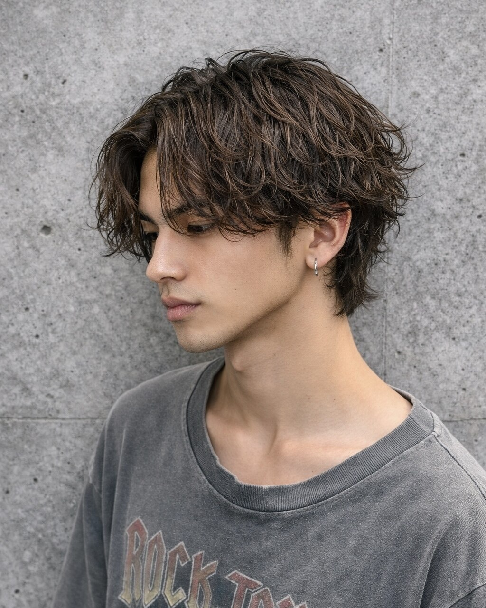
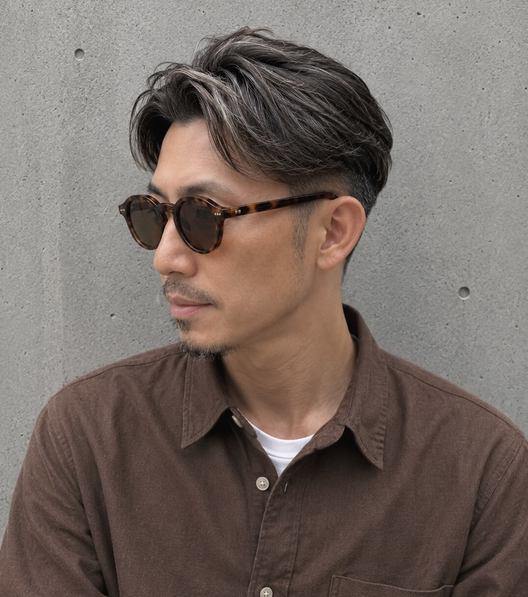
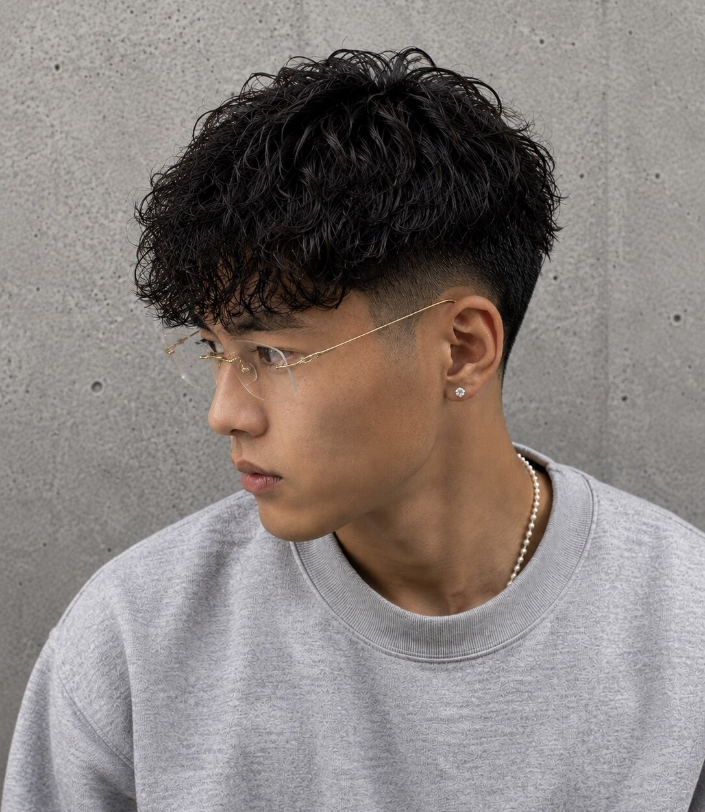

センターパート ナチュラルセンターパート/曲がる縮毛矯正 センターパート／MATTEO 癖毛の方は曲がる縮毛矯正、直毛の方はニュアンスパーマで再現可能です 関連キーワード#メンズヘア #センターパート #テーパーフェード #メンズ縮毛矯正 #ニュアンスパーマ #メンズパーマ #フェザー このスタイルで予約
センターパート ハイライト 外国人ヘア センターパート センターパート／MATTEO 外国人風にベースもブラウンベースにハイライトで立体感をプラスしたやりすぎないトレンドデザインです！ 関連キーワード#ニュアンスパーマ #ブリーチ #ブリーチパーマ #メンズヘア #バレイヤージュ #ハイライト #センターパート このスタイルで予約
白髪ぼかし 白髪ぼかし、ホワイトメッシュ、 ハイライトデザイン 白髪ぼかし／MATTEO 白髪は隠す時代から生かす時代へ、自分の個性をさらに活かし男性の魅力を最大限に引き出します！ 関連キーワード#白髪ぼかし #ハイライト #ホワイトメッシュ #ブリーチ #メンズヘア #センターパート #ニュアンスパーマ このスタイルで予約
スパイキーショート 刈り上げ スイングバング 金メッシュ スパイキーショート スパイキーショート／MATTEO 刈り上げのショートスタイルに感メッシュを全体に入れ立体感とコントラストを出した短髪スタイルです 関連キーワード#刈り上げ #スイングバング #金メッシュ #スパイキーショート このスタイルで予約
スパイキーショート ホワイトカラー スパイキーショート ブリーチカラー スパイキーショート／MATTEO ホワイトカラーと短髪は相性◎ 伸びても黒と白のコントラストが立体感となりいい感じに馴染んでくれます！ 関連キーワード#ホワイトカラー #スパイキーショート #ブリーチカラー このスタイルで予約
スパイキーショート スパイキーショート スパイキーショート／MATTEO 校則対応◎ ビジネスシーン◎ どんなシーンにも合わせられるナチュラルなスパイキーショートスタイルです！動きが出ずらい人はピンパーマと合わせてもgoodです！ 関連キーワード#スパイキーショート このスタイルで予約
パーマ ツイスパマッシュ men'sパーマ パーマ／MATTEO 刈り上げのショートマッシュにツイストスパイラルパーマをかけた清潔感もありどんな年代にも合わせやすいパーマスタイルです 関連キーワード#メンズ #メンズパーマ #フェード このスタイルで予約
パーマ シャドウパーマ メンズパーマ マッシュ パーマ／MATTEO 強さや質感で見せ方を変えれるシャドウパーマはトレンド感あってスタイリングもバッチリ簡単なおすすめヘアです！ 関連キーワード#シャドウパーマ #メンズパーマ #マッシュ このスタイルで予約
センターパート  波巻き センターパート センターパートウルフ センターパート／MATTEO 無造作に抜け感のあるパーマで仕上げたセンターパートスタイルになります 関連キーワード#波巻き #センターパート #センターパートウルフ このスタイルで予約
白髪ぼかし  白髪ぼかし サイドパート 白髪ぼかし／MATTEO 自然になんかいい感じを作る 白髪ボカシです！少なめに自然に馴染ませるようにしてるので染めた感も少ないのがポイント！ 関連キーワード#ショート #白髪ぼかし #ビジネススタイル #バーバー #メンズ #メンズヘア #刈り上げショート このスタイルで予約
スパイキーショート ナチュラルショート スパイキーショート スパイキーショート／MATTEO 上げてもおろしでもいける万能スタイルです！ 関連キーワード#ショート #メンズ #メンズヘア #フェード #スパイキーショート #フェザーショート #メンズパーマ このスタイルで予約
スパイキーショート  スペインカール テーパーフェード スパイキーショート スパイキーショート／MATTEO 暑い夏に向けて刈り上げ高めのスペインカール 関連キーワード#パーマ #フェード #ショート #スパイキー #スペインカール このスタイルで予約